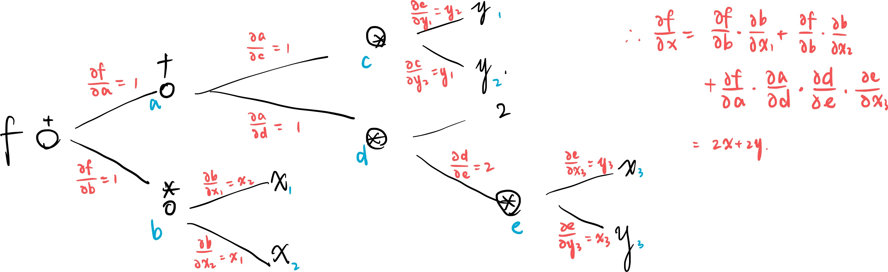
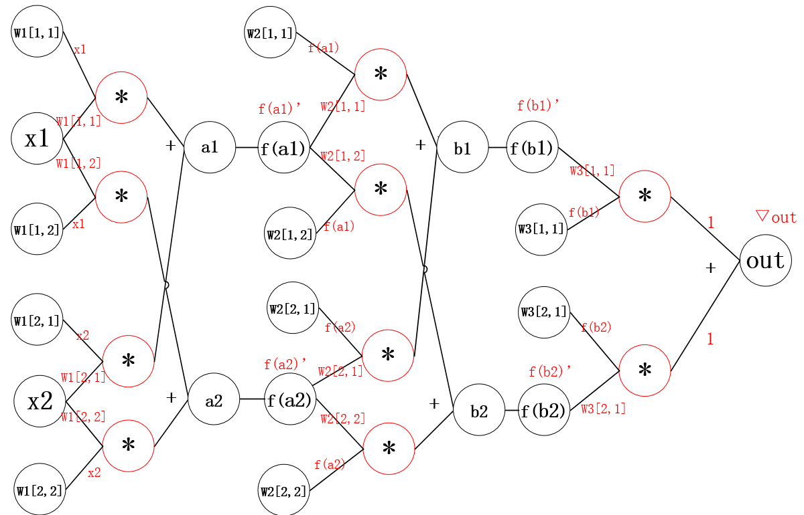

梯度下降和反向传播
梯度下降⚓︎
梯度是一个向量，指向了某个特征量总体而言下降最快的方向，从某种程度上反映了机器学习过程中参数变化的方向，也就是机器学习前进的方向。
设机器学习训练得到的模型为 \(f\) ，收集到的数据 \(x\) 在参数 \(w\) 下得到了估计值 \(Y_{\rm predict} = f(x, w)\)，与此同时有真实结果 \(Y_{\rm true}\)，要模型的好坏，判据有以下两种
假设 \(w\) 是一个一维的参数。我们用如下的方法更新 \(w\)
- 计算梯度：\(\nabla w = \frac{f(w+0.000001)-f(w-0.000001)}{2*0.000001}\)
- 更新 \(w\)：\(w = w - \alpha \nabla w\). 这里的减号可以被理解为相当于是逆着\(loss关于w的斜率\)变化，总是向着loss减小的方向变化。
反向传播，back-propagation⚓︎
一个函数可以根据计算顺序建立表达式树。表达式树的节点为运算操作符（非叶节点），字母或数字（叶节点），因而每个节点代表一个具有数学意义的表达式，用一个符号来代表这个节点，那么树的每一条边都可以求出两者之间的偏导关系，这样的偏导关系可以传递，两个点之间涉及多个边的偏导关系就是这两个点之间的所有路径上，每一条路径偏导关系之积的和。这就是反向传播。

神经网络也可以有反向传播。

在梯度下降过程中，因为神经网络的参数每层之间具有独立性，因此可以从顶到底逐层更新参数。
首先更新最顶层梯度：
按照以上计算结果更新权重，顺便算算下面这两个量，之后也会用到。
第二层：
最底层：
归纳总结为一般结论：
Pytorch 实现⚓︎
Tensor属性.requires_grad为True时，将会追踪对于该张量所有操作，后续会被计算梯度。
下面这个Jupyter notebook给出了一个基本的手动实现线性回归的模型：
说一千道一万，我们的训练目标就是让这个loss函数达到最小值，梯度下降法就是通过反向传递，对决定loss取值的各个变量（参数）求偏导，（backward()），然后通过某种策略更新这些参数。充分训练能够让一个模型在给定的这些输入（定义域）中得出大致与目标相似的输出，而我们的模型的最终应用目标是在一个更广阔的定义域内都能模拟出目标函数的行为。
损失函数⚓︎
功能强大的Pytorch支持的绝非仅有这么多。很多常用的损失函数的计算，甚至都不需要我们自己来操刀。
常用的损失函数包括：torch.nn.L1Loss（与target差之绝对值之和）torch.nn.MSELoss（均方差，也就是上面讲的，线性回归使用的损失函数）torch.nn.CrossEntropyLoss（常用于分类，既限制了模型的高置信度，也限制了模型的分布，）
使用损失函数计算损失过后，通过反向传播就可以将梯度回落到每一个可被训练的参数上，以供调整。
优化器⚓︎
Pytorch甚至写好了可以帮助你按照某种策略自动更新参数的优化器。通过新建一个对象，指定其管辖的参数，学习速率和其他用到的参数就可以构建一个优化器了：
optim = optim.SGD(model.parameters(), lr=0.01, momentum=0.9)
optimizer = optim.Adam([var1, var2], lr=0.0001)
甚至可以设置因层而异的优化器：
optim.SGD([
{'params': model.base.parameters()},
{'params': model.classifier.parameters(), 'lr': 1e-3}
], lr=1e-2, momentum=0.9)
优化器的使用方面，可以使用zero_grad()方法清空梯度，调用损失函数的backward()方法更新梯度，再调用optimizer.step()更新参数。